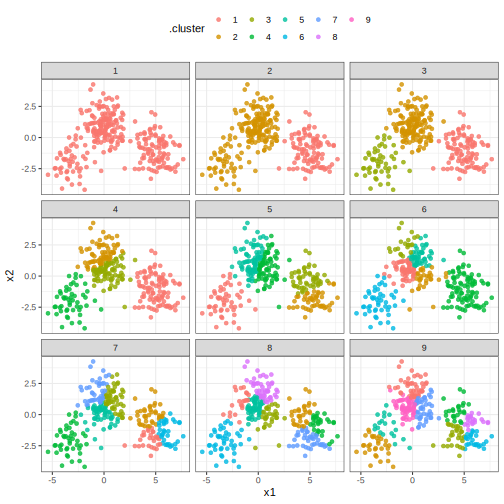

library(tidymodels)
set.seed(27)
centers <- tibble(
cluster = factor(1:3),
num_points = c(100, 150, 50), # number points in each cluster
x1 = c(5, 0, -3), # x1 coordinate of cluster center
x2 = c(-1, 1, -2) # x2 coordinate of cluster center
)
labelled_points <-
centers %>%
mutate(
x1 = map2(num_points, x1, rnorm),
x2 = map2(num_points, x2, rnorm)
) %>%
select(-num_points) %>%
unnest(cols = c(x1, x2))
ggplot(labelled_points, aes(x1, x2, color = cluster)) +
geom_point(alpha = 0.3)K-means clustering with tidy data principles
statistical analysis
clustering
tidying results
Summarize clustering characteristics and estimate the best number of clusters for a data set.
Introduction
This article only requires the tidymodels package.
K-means clustering serves as a useful example of applying tidy data principles to statistical analysis, and especially the distinction between the three tidying functions:
tidy()augment()glance()
Let’s start by generating some random two-dimensional data with three clusters. Data in each cluster will come from a multivariate gaussian distribution, with different means for each cluster:
This is an ideal case for k-means clustering.
How does K-means work?
Rather than using equations, this short animation using the artwork of Allison Horst explains the clustering process:

Clustering in R
We’ll use the built-in kmeans() function, which accepts a data frame with all numeric columns as it’s primary argument.
points <-
labelled_points %>%
select(-cluster)
kclust <- kmeans(points, centers = 3)
kclust
#> K-means clustering with 3 clusters of sizes 148, 51, 101
#>
#> Cluster means:
#> x1 x2
#> 1 0.08853475 1.045461
#> 2 -3.14292460 -2.000043
#> 3 5.00401249 -1.045811
#>
#> Clustering vector:
#> [1] 3 3 3 3 3 3 3 3 3 3 3 3 3 3 3 3 3 3 3 3 3 3 3 3 3 3 3 3 3 3 3 3 3 3 3 3 3
#> [38] 3 3 3 3 3 3 3 3 3 3 3 3 3 3 3 3 3 3 3 3 3 3 3 3 3 3 3 3 3 3 3 3 3 3 3 3 3
#> [75] 3 3 3 3 3 3 3 3 3 3 3 3 3 3 3 3 3 3 3 3 3 3 3 3 3 3 1 1 1 1 1 1 1 1 1 1 1
#> [112] 1 1 1 1 1 1 1 1 1 1 1 1 1 1 1 1 1 1 1 1 1 1 1 1 1 1 1 1 1 1 1 1 1 1 1 1 1
#> [149] 1 1 1 1 1 1 1 1 1 1 1 1 1 1 1 1 1 1 1 1 1 1 1 1 1 1 1 1 1 1 1 1 1 1 1 1 1
#> [186] 1 1 1 1 1 1 1 1 1 1 1 1 1 3 1 1 1 1 1 1 1 1 1 1 1 1 1 1 1 1 1 1 1 1 1 1 1
#> [223] 1 1 1 1 1 1 1 1 1 1 1 1 1 1 1 1 1 1 1 1 1 2 1 1 1 1 1 1 2 2 2 2 2 2 2 2 2
#> [260] 2 2 2 2 2 2 2 2 2 2 2 2 2 2 2 2 2 2 2 2 2 2 2 2 2 2 2 2 2 2 2 2 2 2 2 2 2
#> [297] 2 2 2 2
#>
#> Within cluster sum of squares by cluster:
#> [1] 298.9415 108.8112 243.2092
#> (between_SS / total_SS = 82.5 %)
#>
#> Available components:
#>
#> [1] "cluster" "centers" "totss" "withinss" "tot.withinss"
#> [6] "betweenss" "size" "iter" "ifault"
summary(kclust)
#> Length Class Mode
#> cluster 300 -none- numeric
#> centers 6 -none- numeric
#> totss 1 -none- numeric
#> withinss 3 -none- numeric
#> tot.withinss 1 -none- numeric
#> betweenss 1 -none- numeric
#> size 3 -none- numeric
#> iter 1 -none- numeric
#> ifault 1 -none- numericThe output is a list of vectors, where each component has a different length. There’s one of length 300, the same as our original data set. There are two elements of length 3 (withinss and tot.withinss) and centers is a matrix with 3 rows. And then there are the elements of length 1: totss, tot.withinss, betweenss, and iter. (The value ifault indicates possible algorithm problems.)
These differing lengths have important meaning when we want to tidy our data set; they signify that each type of component communicates a different kind of information.
cluster(300 values) contains information about each pointcenters,withinss, andsize(3 values) contain information about each clustertotss,tot.withinss,betweenss, anditer(1 value) contain information about the full clustering
Which of these do we want to extract? There is no right answer; each of them may be interesting to an analyst. Because they communicate entirely different information (not to mention there’s no straightforward way to combine them), they are extracted by separate functions. augment adds the point classifications to the original data set:
augment(kclust, points)
#> # A tibble: 300 × 3
#> x1 x2 .cluster
#> <dbl> <dbl> <fct>
#> 1 6.91 -2.74 3
#> 2 6.14 -2.45 3
#> 3 4.24 -0.946 3
#> 4 3.54 0.287 3
#> 5 3.91 0.408 3
#> 6 5.30 -1.58 3
#> 7 5.01 -1.77 3
#> 8 6.16 -1.68 3
#> 9 7.13 -2.17 3
#> 10 5.24 -2.42 3
#> # ℹ 290 more rowsThe tidy() function summarizes on a per-cluster level:
tidy(kclust)
#> # A tibble: 3 × 5
#> x1 x2 size withinss cluster
#> <dbl> <dbl> <int> <dbl> <fct>
#> 1 0.0885 1.05 148 299. 1
#> 2 -3.14 -2.00 51 109. 2
#> 3 5.00 -1.05 101 243. 3And as it always does, the glance() function extracts a single-row summary:
glance(kclust)
#> # A tibble: 1 × 4
#> totss tot.withinss betweenss iter
#> <dbl> <dbl> <dbl> <int>
#> 1 3724. 651. 3073. 2Exploratory clustering
While these summaries are useful, they would not have been too difficult to extract out from the data set yourself. The real power comes from combining these analyses with other tools like dplyr.
Let’s say we want to explore the effect of different choices of k, from 1 to 9, on this clustering. First cluster the data 9 times, each using a different value of k, then create columns containing the tidied, glanced and augmented data:
kclusts <-
tibble(k = 1:9) %>%
mutate(
kclust = map(k, ~kmeans(points, .x)),
tidied = map(kclust, tidy),
glanced = map(kclust, glance),
augmented = map(kclust, augment, points)
)
kclusts
#> # A tibble: 9 × 5
#> k kclust tidied glanced augmented
#> <int> <list> <list> <list> <list>
#> 1 1 <kmeans> <tibble [1 × 5]> <tibble [1 × 4]> <tibble [300 × 3]>
#> 2 2 <kmeans> <tibble [2 × 5]> <tibble [1 × 4]> <tibble [300 × 3]>
#> 3 3 <kmeans> <tibble [3 × 5]> <tibble [1 × 4]> <tibble [300 × 3]>
#> 4 4 <kmeans> <tibble [4 × 5]> <tibble [1 × 4]> <tibble [300 × 3]>
#> 5 5 <kmeans> <tibble [5 × 5]> <tibble [1 × 4]> <tibble [300 × 3]>
#> 6 6 <kmeans> <tibble [6 × 5]> <tibble [1 × 4]> <tibble [300 × 3]>
#> 7 7 <kmeans> <tibble [7 × 5]> <tibble [1 × 4]> <tibble [300 × 3]>
#> 8 8 <kmeans> <tibble [8 × 5]> <tibble [1 × 4]> <tibble [300 × 3]>
#> 9 9 <kmeans> <tibble [9 × 5]> <tibble [1 × 4]> <tibble [300 × 3]>We can turn these into three separate data sets each representing a different type of data: using tidy(), using augment(), and using glance(). Each of these goes into a separate data set as they represent different types of data.
clusters <-
kclusts %>%
unnest(cols = c(tidied))
assignments <-
kclusts %>%
unnest(cols = c(augmented))
clusterings <-
kclusts %>%
unnest(cols = c(glanced))Now we can plot the original points using the data from augment(), with each point colored according to the predicted cluster.
p1 <-
ggplot(assignments, aes(x = x1, y = x2)) +
geom_point(aes(color = .cluster), alpha = 0.8) +
facet_wrap(~ k)
p1
Already we get a good sense of the proper number of clusters (3), and how the k-means algorithm functions when k is too high or too low. We can then add the centers of the cluster using the data from tidy():
p2 <- p1 + geom_point(data = clusters, size = 10, shape = "x")
p2The data from glance() fills a different but equally important purpose; it lets us view trends of some summary statistics across values of k. Of particular interest is the total within sum of squares, saved in the tot.withinss column.
ggplot(clusterings, aes(k, tot.withinss)) +
geom_line() +
geom_point()This represents the variance within the clusters. It decreases as k increases, but notice a bend (or “elbow”) around k = 3. This bend indicates that additional clusters beyond the third have little value. (See here for a more mathematically rigorous interpretation and implementation of this method). Thus, all three methods of tidying data provided by broom are useful for summarizing clustering output.
Session information
#> ─ Session info ─────────────────────────────────────────────────────
#> setting value
#> version R version 4.3.0 (2023-04-21)
#> os macOS Monterey 12.6
#> system aarch64, darwin20
#> ui X11
#> language (EN)
#> collate en_US.UTF-8
#> ctype en_US.UTF-8
#> tz America/Los_Angeles
#> date 2023-05-25
#> pandoc 3.1.1 @ /Applications/RStudio.app/Contents/Resources/app/quarto/bin/tools/ (via rmarkdown)
#>
#> ─ Packages ─────────────────────────────────────────────────────────
#> package * version date (UTC) lib source
#> broom * 1.0.4 2023-03-11 [1] CRAN (R 4.3.0)
#> dials * 1.2.0 2023-04-03 [1] CRAN (R 4.3.0)
#> dplyr * 1.1.2 2023-04-20 [1] CRAN (R 4.3.0)
#> ggplot2 * 3.4.2 2023-04-03 [1] CRAN (R 4.3.0)
#> infer * 1.0.4 2022-12-02 [1] CRAN (R 4.3.0)
#> parsnip * 1.1.0 2023-04-12 [1] CRAN (R 4.3.0)
#> purrr * 1.0.1 2023-01-10 [1] CRAN (R 4.3.0)
#> recipes * 1.0.6 2023-04-25 [1] CRAN (R 4.3.0)
#> rlang 1.1.1 2023-04-28 [1] CRAN (R 4.3.0)
#> rsample * 1.1.1 2022-12-07 [1] CRAN (R 4.3.0)
#> tibble * 3.2.1 2023-03-20 [1] CRAN (R 4.3.0)
#> tidymodels * 1.1.0 2023-05-01 [1] CRAN (R 4.3.0)
#> tune * 1.1.1 2023-04-11 [1] CRAN (R 4.3.0)
#> workflows * 1.1.3 2023-02-22 [1] CRAN (R 4.3.0)
#> yardstick * 1.2.0 2023-04-21 [1] CRAN (R 4.3.0)
#>
#> [1] /Users/emilhvitfeldt/Library/R/arm64/4.3/library
#> [2] /Library/Frameworks/R.framework/Versions/4.3-arm64/Resources/library
#>
#> ────────────────────────────────────────────────────────────────────